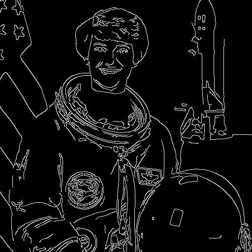

Color
Paper #f7f2e7Surface #fffdf7Ink #1d1b18Amber #f5b301Teal #0b6e70Tomato #c23f1cImage well #d6d6d6
Dark #141311Surface #1c1b19Line #f7f2e7Amber #f5b301Teal #4cc9c0Tomato #ff8a65Image well #2a2a2a
Type
Edge Detection
Instrument Sans carries the explanations, so long passages stay easy to read. Fredoka is only for names and headings.
DM Mono: 512 × 512 · uint8 · IoU 0.993
Controls
Run the lab
Original512 × 512 · 1 ch

Canny100, 200 · binary
Edge pixels
6.2%